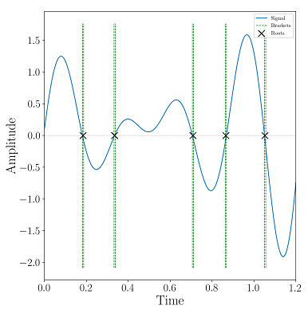

Publications

Early Fatigue Damage Evaluation Of Nonlinear Guided Wave Imaging In Hyperelastic Materials

Nonlinear Guided Wave Tomography for Detection and Evaluation of Early-Life Material Degradation in Plates

Robust Zero-crossings Detection in Noisy Signals using Topological Signal Processing

A Topological Framework for Identifying Phenomenological Bifurcations in Stochastic Dynamical Systems